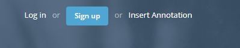
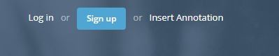

VINNO
Abstract
Video and Audio Annotation Tool is a Chrome Extension that allows the user to bookmark certain timestamps of a video or audio resource. We call annotation a bookmark a of timestamp. The extension allows the user to add an annotation on some very well defined websites. The list of allowed websites is: Youtube, Vimeo, Tunein, Mixcloud. The user can edit the annotation an he can see and manage the annotations in a main page.
Motivation
Videos and sound recordings are a great source of information, especially today when they are more and more used for educational purpuse. Unfortunately, most of the time users have no way to access fast the information. In order to provide an easy way to structure the data and provide additional information for a video or audio recording, we created a Chrome Extension called Video and Audio Annotation Tool.
The annotations are displayed directly on top of the media player for easy access. The tool offers the user the possibility to see all his annotations and find very easily resources that marked.
Definition
General Design
The tool is made out of 3 parts. One part is the annotation that appears on the media player. Second part is represented by the popup that appears when the extension button is clicked. Here the user can find some preferences and the Options button that leads to the last part of the tool, which is the main page. Inside the main page the user can visualize all the annotations, he can edit them or delete them.
User Interaction
The action of adding an annotation is done by clicking an the button Add Annotation in the top right corner of a page. The button is displayed specific to the website the user is on.
 

The annotation has a field with start time, end time, a text box where the user can write a comment and a save button. The start time is automatically filled with the timestamp of the video the user is playing. End time is filled by the user if he wants to highlight an interval. Also the user has the possibility to add images or sound files to the annotation. On right side of the popup annotation, the user can select a location.
After adding an annotation, the user can see the annotations added on the current video by hovering on the playback bar of the media player.
The extension button offers the user the posibility to navigate to the main page by clicking the Options button. On this page the user can see all the annotations sorted by website. User can see here the url of the video or audio resource and the comment that the user placed.
Implementation
VANNO is created as a chrome extension in order to have access to the Chrome API. Through this API we can extend the functionlity of the websites the user is on making it for him to add annotation on different media players. The base of the extension is the manifest.json file that tells the browser what permissions our tool needs and what actions it is doing.
Initialy the team discused the main features that we want to provide through our extension like: adding annotations and viewing annotations. After that we went through a design phase where we tried to come up with intuitive design that provides user friendly actions. An important was the design of the popup were the user will introduce his notes. We decided to give the user to add an annotation at a specific point on the timeline or an entire. Also the user has the possibility to add other media files.
In Sketch1 shown below you can see different ideas for how the popup should look like. We agreed that the popup must have: title, start time, end time, an input area and media file selector. Later we came up with the idea to provide the user with the choise to select a geo location
First we wanted to store all this information about annotations in the local storage provided by the Chrome API. This was not possible due to limitation imposed by the way Chrome API store object in local memory. It was very slowly and complicated to store large object with some media files inside them. We opted for a free and development friendly solution provided by firebase. All the actions with the database are stored in database-utils.js. From here we took the generic functions and we used them inside other script files to provide the CRUD functionalities for each independent website the extension supports.
Code management
In order to work efficiently as a team we chose a Distributed Version Control Software called Git. Our repository can be viewed at the link VANNO. The project has a common part consisting of manifest.json, background.js, content-utils.js, database-utils.js. This common part contains the abstractisation for adding/removing an annotation, viewing all annotations. Each member of the team was resposable for integrating the generic functions of adding annotations in the supported websites.